Two routes were competing
Visitors could not identify quickly enough whether the experience was relevant to hiring or finding a role.
A research-led redesign for Xentys, turning a content-heavy website into a clearer, trust-led product for candidates and hiring teams.
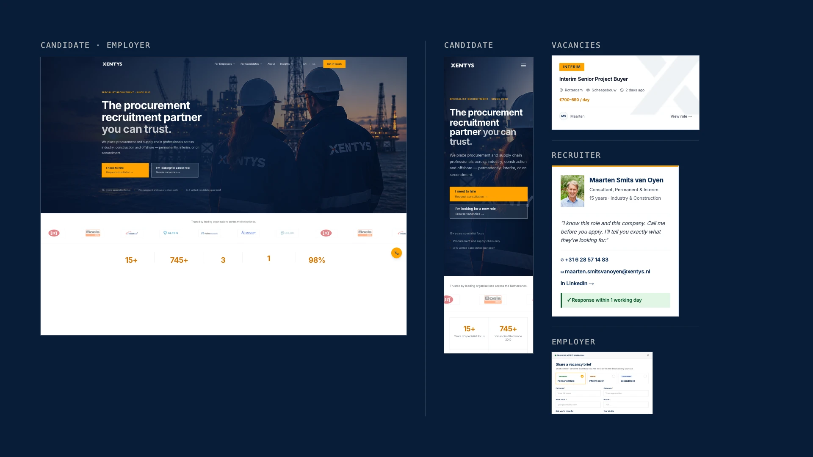
One connected system: audience routes, vacancy discovery, recruiter trust, guided consultation, and responsive implementation.
What began as a research-led redesign moved into production. I worked across research, strategy, interface design, prototyping, testing, and frontend implementation.
Xentys serves two audiences with different goals: hiring managers looking for recruitment support and candidates looking for specialist vacancies. The work connected both journeys through one coherent product system.
Clarity first, trust second, human connection throughout.
The previous site contained valuable specialist content, but candidate and employer journeys competed within the same structure. Trust signals appeared late and important actions lacked guidance.
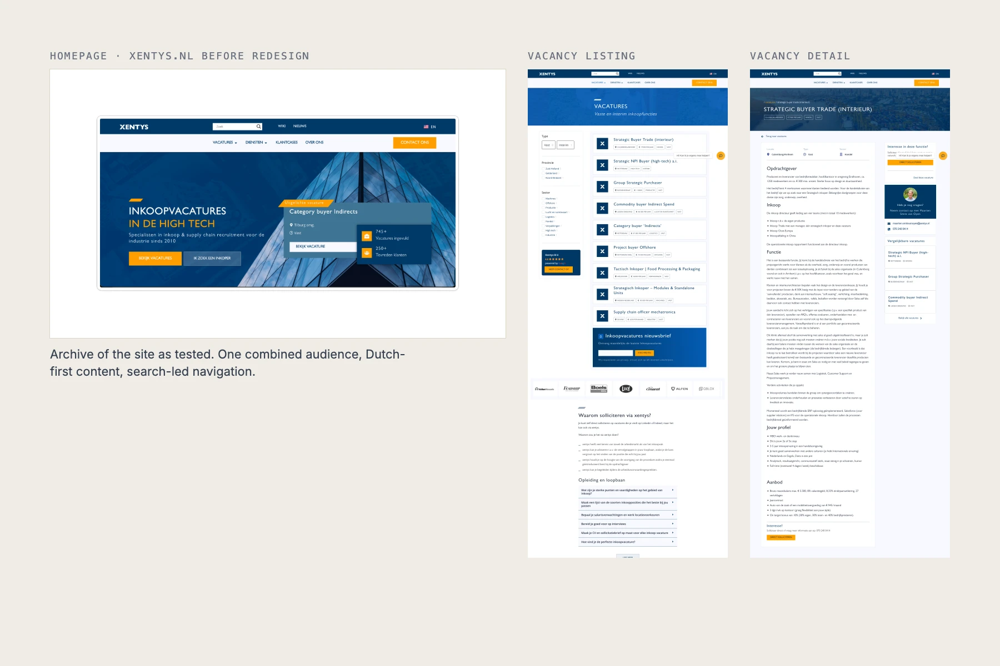
The redesign combined heuristic review, accessibility analysis, analytics, heatmaps, stakeholder interviews, usability testing, and competitor research.
Visitors could not identify quickly enough whether the experience was relevant to hiring or finding a role.
A generic form did not explain what employers should share or what would happen after submission.
Recruiter expertise and human contact were present, but buried deeper in the experience.
Cards, filtering, result feedback, and application routes needed stronger hierarchy and clearer interaction cues.
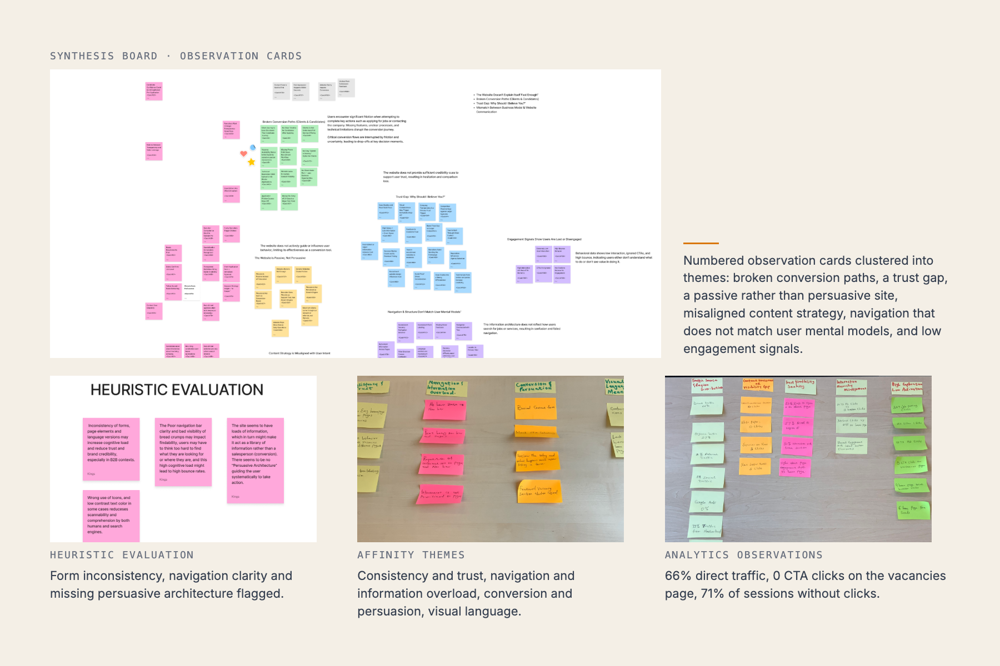
The product was framed as five connected systems: audience routing, vacancy discovery, recruiter trust, employer consultation, and post-submission reassurance.
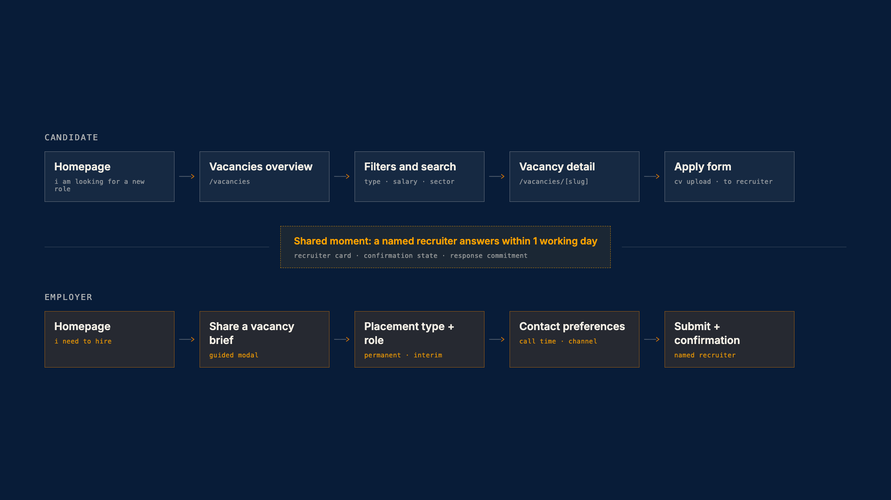
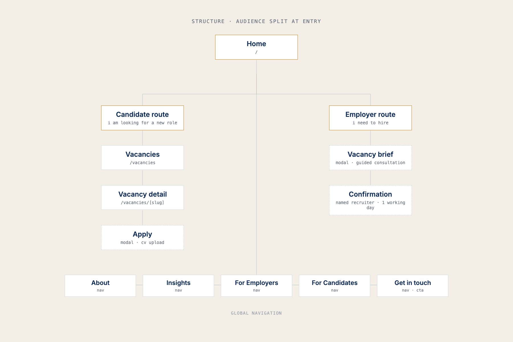
This curated board gives the process a visible middle. It connects research structure to interface choices without turning the page into a Figma archive.
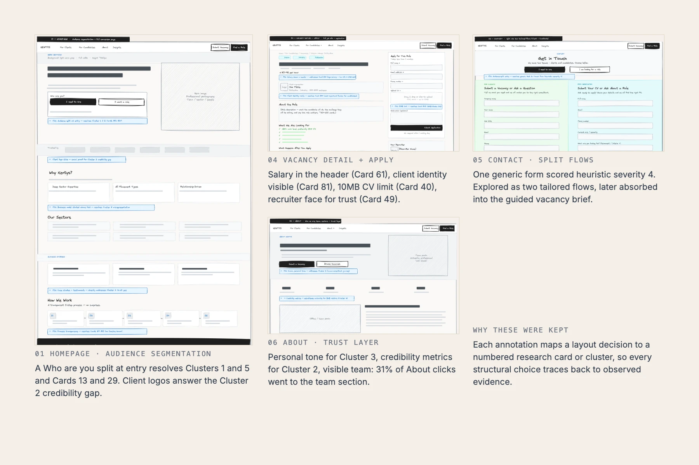
Why it mattersCandidates and employers should identify their path without interpreting the whole website first.
Why it mattersRole information, filter feedback, and click affordances reduce effort during the highest-frequency candidate task.
Why it mattersA named person, direct contact details, and a clear application route make recruitment feel human rather than transactional.
Why it mattersPlacement type, role context, urgency, preferences, and clear next steps turn “contact us” into a meaningful hiring action.
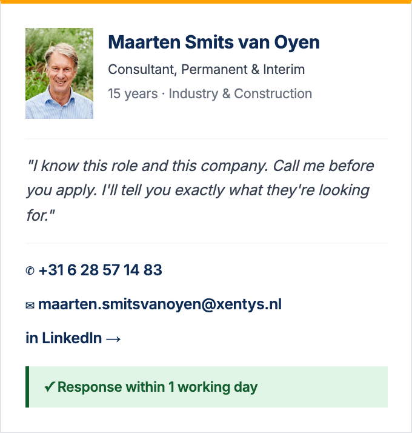
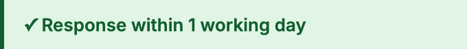
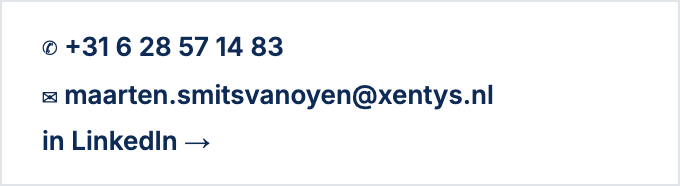
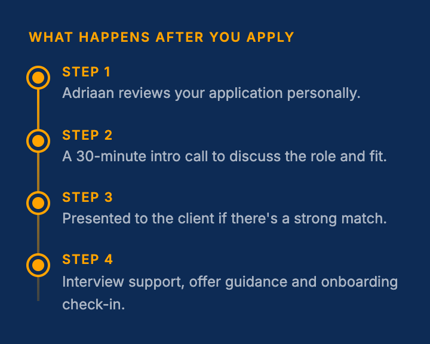
The hi-fi design became a responsive Next.js prototype covering navigation, filtering, modal interactions, form flows, active states, and success feedback.
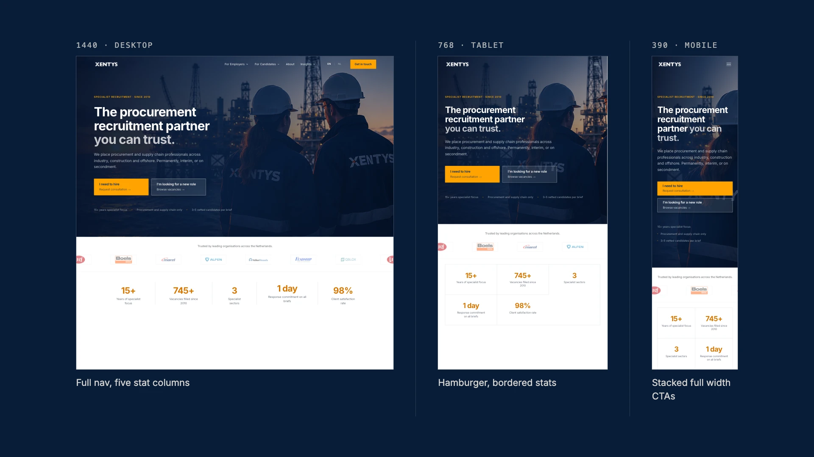
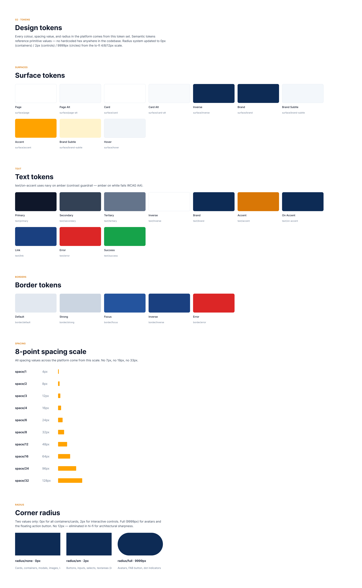
These comparisons connect research evidence to the resulting interface decisions. They are not presented as traditional usability-testing iterations.
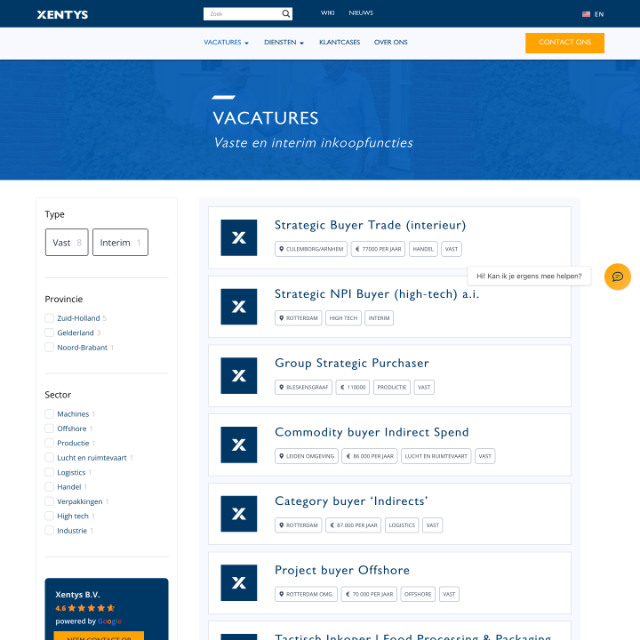
Card 61: expose salary and useful role information. Card 81: make client identity visible. Heatmap evidence also showed 1,273 heading clicks and zero CTA clicks.
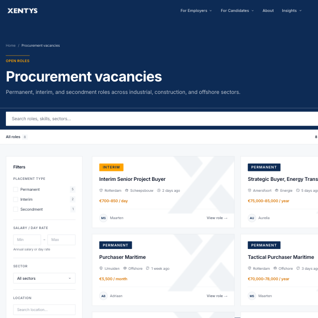
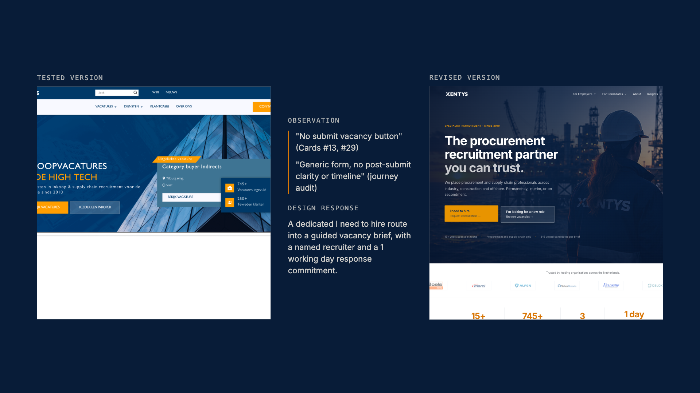
Until verified post-launch metrics are available, the outcome should make the product transformation visible without inventing performance claims.
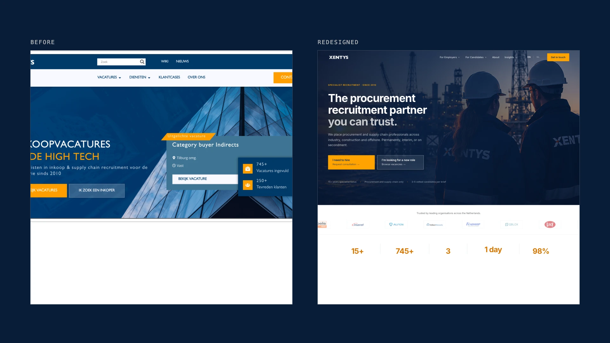
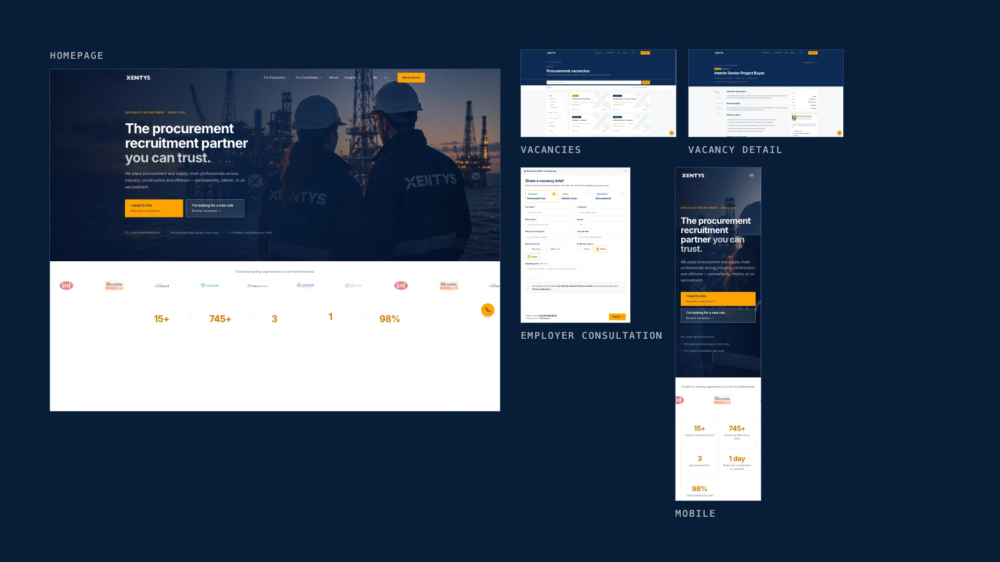
Evidence is useful when it shapes navigation, hierarchy, content, and interaction, not when it only validates styling.
Recruiter visibility, ownership, response timing, and next steps matter as much as visual polish in recruitment.
Building the prototype revealed responsive, interaction, and implementation issues earlier, while they were still inexpensive to change.